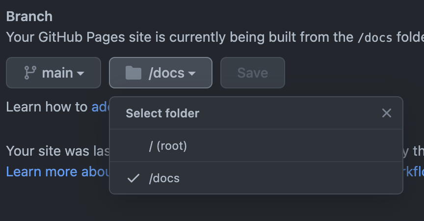
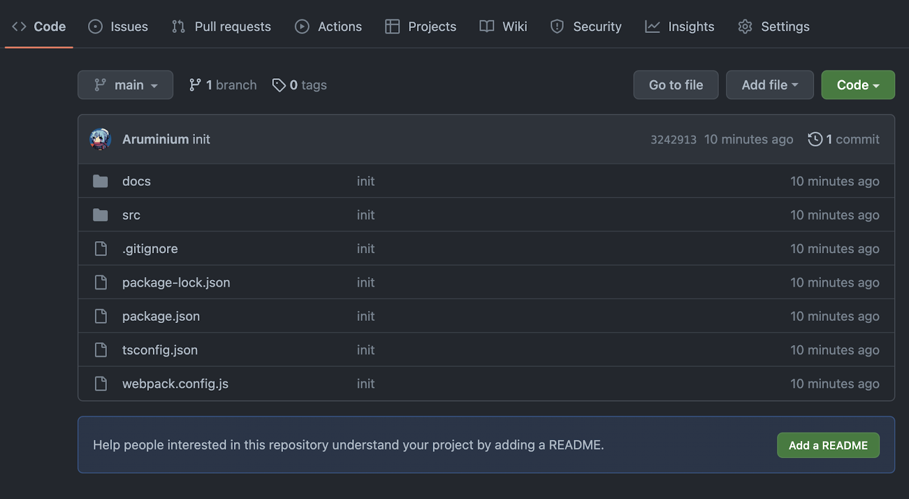
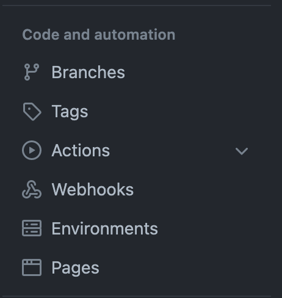
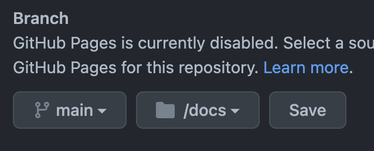
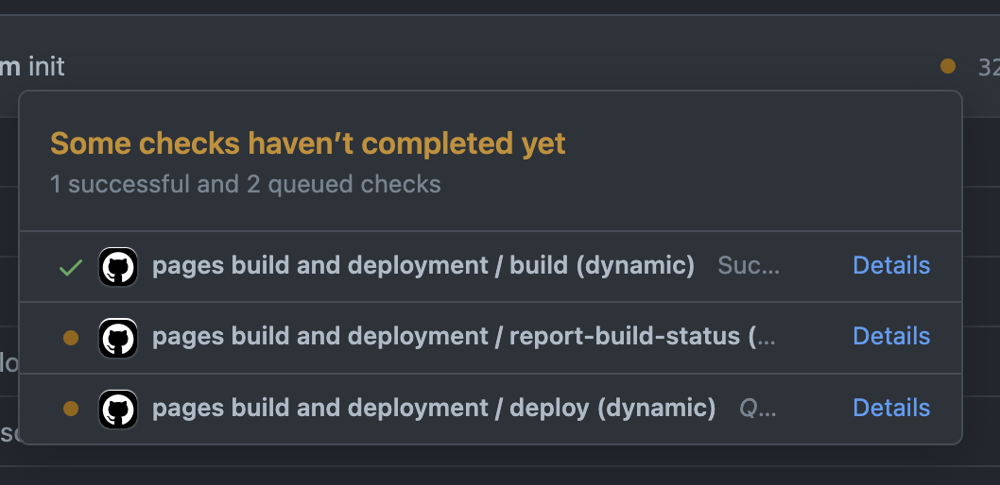
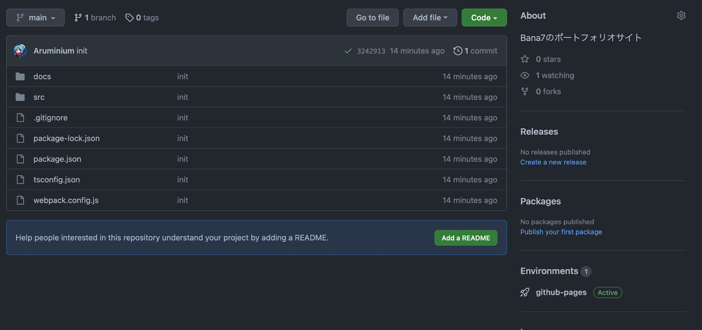
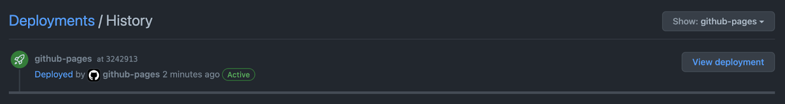

今回は、「デプロイ」を扱う
デプロイはクラウドを使うことが多い
デプロイすることができたら晴れて初学者を卒業だ
今回はGithub PagesにHTMLファイルをデプロイして、世界へ公開しよう！
端的に言うとデプロイ(deploy)とはプログラムを公開することです。
これまでReact.jsでは「localhost」が度々出ていましたが、どう言う意味でしょうか
localhostはホスト名と呼びます。
MySQLでログインする際に「127.0.0.1」と入力しましたが、これもlocalhostの別の表し方のようなものです。
この3000はポート番号と言い、TCP/IP通信を識別する番号です。
React.jsの場合、初期設定では「自分自身のポート番号3000」にアクセスしたらwebページを返すといったことをしてくれます。
自分でこのポート番号を変えることができるが詳細は割愛
デプロイではこうしたホスト名やポート番号を弄る場面があります。 (AWS EC2 と言うIaaS)
しかし、今回はそういった手間がかかる事を省くためにGithub Pagesというサービスを使います。
ホスティングサービスでWebページをインターネット上に公開することができる。
細かい設定要らずで、HTMLファイルなどをpushしてGithub Pagesの設定をONにすることで簡単に使うことができる。
Github Pagesは、SPSS2022(リポジトリのroot)をWebサイトのrootにするか、SPSS2022/docsをrootにするかを選択できる。

今回は/docsを選択する
今回はh1タグのみの簡単なHTMLファイルをデプロイする。
<!DOCTYPE html>
<html>
<head>
<meta charset="UTF-8">
<title>title</title>
</head>
<body>
<h1>profile</h1>
</body>
</html>pushしたら自分のリポジトリページにとんで下さい。

「Setting」をクリック

「Pages」をクリック

このように設定して「Save」を押すとデプロイ完了

これがすべてチェックされるまで、待つ(リロード挟みながら)

「Environments」の「github-pages」をクリック

「View deployment」をクリックする
表示されていたらOK
確認課題はありません
今回はデプロイの感覚を掴むためにHTMLファイルをデプロイした。
HTML+CSS+javaScriptを組み合わせたものもデプロイできるが、せっかくなので最終回ではReact.jsとMUIを用いてwebページを作り、それをデプロイする。